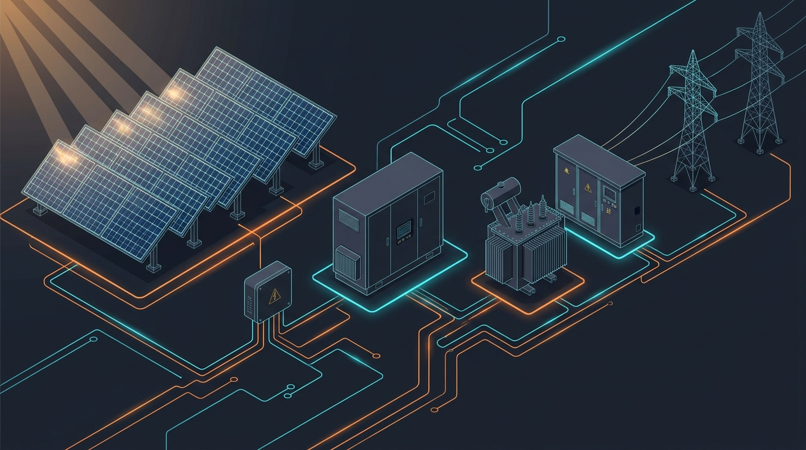

電気の流れとシステム全体図
太陽電池パネルで生まれた直流（DC）電力は、いくつもの設備を経て交流（AC）に変換され、高い電圧へと昇圧されて送電線へ送り出されます。
メガソーラー設備構成の全体図
日光が当たってから系統（電力会社）へ流れるまでの機器構成と電線のつながり

太陽光を吸収して直流（DC数百V〜1,500V）を発電。影や汚れがあると電圧・電流が低下する。
十数本〜数十本のストリング配線を束ねる。逆流防止ダイオードやヒューズ、開閉器を備える。
直流（DC）を系統と同じ交流（AC 50/60Hz）に変換。最大電力点を追う「MPPT制御」を担う心臓部。
PCSから出た低圧（300〜400V）を高圧（6,600V）や特高（22kV〜66kV）へ一気に昇圧。遮断器や保護リレーを内蔵。
電力会社の配電線・送電鉄塔へ接続。売電メーター（取引用計量器）で売電電力量をカウントする。
セル・モジュール・ストリング・アレイの階層
発電所現場で飛び交う「ストリング」「アレイ」という言葉は、パネルのまとめ方の単位です。
構成単位の階層図解
小さなセルが直列・並列に組み合わさって、数百〜1,500Vのメガソーラーを構成します
モジュール1枚の故障や影でも、直列でつながる「ストリング全体」の電流が低下します。遠隔監視でストリングごとの電流値を比較することで、「どの架台のどの列で異常が起きているか」を遠隔からピンポイントで突き止められます。
IV特性（電流−電圧カーブ）とMPPTの図解
太陽電池は乾電池とは違い、電圧と電流の組み合わせが日射や温度で刻々と変化します。この特性を表したものが「IVカーブ」です。
IVカーブと最大電力点（Pmax）
青線が電流（I）、橙線が電力（P＝V×I）。PCSは常に山の頂点（Pmax）を自動で追い続けます（MPPT）。
❄️ 冬期・低温時の変化
- 温度が下がると Voc（開放電圧）が右へ伸びて高くなる。
- 冬の早朝の一番寒い時間帯に、PCSの最大入力許容電圧を超えてパンクしないよう設計する（Vocの温度係数計算）。
☀️ 夏期・高温時の変化
- パネル温度が60℃超に上がると 電圧Vが左へ縮んで大幅に低下 する。
- 日射があっても夏場にPRが下がる主要原因は、この「電圧低下による損失（温度損失）」です。
PCS（パワコン）集中型 vs ストリング型
メガソーラーの設計思想は、巨大なPCSでまとめて変換する「集中型（セントラル）」と、小型PCSを無数に並べる「ストリング型（分散型）」で大きく分かれます。
2つの方式の配線・回路の違い
配線の長さ、MPPTの制御細かさ、故障時の売電ストップ範囲に決定的な違いがあります
キュービクル（高圧受変電設備）の中身
発電所敷地の隅にある金属製の箱「キュービクル」。中には高電圧を扱い、発電所と電力会社系統を守る重要機器が凝縮されています。
キュービクル内部の機器配置イメージ
扉を開けると「受電盤」「変圧器盤」「連系盤」に分かれています
保護リレーと「波及事故防止」の仕組み
発電所内でケーブル損傷や地絡（漏電）などの事故が起きたとき、最も恐ろしいのは「地域の配電線全体を巻き込んで近隣一帯を停電させる波及事故」です。これを防ぐ防衛ラインを図解します。
構内事故時の遮断シーケンス
異常発生からわずかコンマ数秒で回路を遮断し、系統の安全を担保します
自社構内の遮断器が動作せず、電力会社の変電所側の遮断器を落としてしまうと、周辺の工場や住宅一帯が停電する「波及事故」になります。年次点検で保護継電器の連動試験を確実に行うのは、この事態を絶対に防ぐためです。
電気保安体制と電気主任技術者
出力50kW以上の太陽光発電所は「自家用電気工作物」となり、法律上の保安責任が発生します。
| 役職・制度 | 役割とAMの実務ポイント |
|---|---|
| 設置者（発電事業者） | 法律上の保安の最終責任者（SPVや所有会社）。保安規程を定め、経産大臣（産業保安監督部長）へ届出を行う義務がある。 |
| 電気主任技術者 | 保安規程に基づき、発電所の工事・維持・運用の保安監督を行う国家資格者。高圧案件では第3種以上、特高案件では規模に応じ第1種・第2種が必要。 |
| 外部委託承認制度 | 高圧連系（一定規模未満）の場合、主任技術者の常駐選任に代えて、電気保安法人（保安協会等）や個人技術者へ保安業務を委託できる制度。 |
| 保安規程 | 点検の頻度（月次・年次）、組織体制、巡視項目、緊急時連絡網、記録保存を定めた「発電所の憲法」。これに違反すると指導対象となる。 |
設計施工標準・技術基準・点検指針マップ
メガソーラーの健全な設計・施工・保守を担保するために参照される中核文献（Google Driveナレッジベース「02_設備技術・設計施工・保安」に原文保管）。
| 区分 | 重要指針・標準規格 | AM実務における活用法 |
|---|---|---|
| 電気技術基準 | 電気設備の技術基準の解釈（電技解釈） 電力安全分野におけるスマート化の現状 |
第46条（高圧架空電線等の施設）、第228条（太陽電池発電所の施設基準）、スマート保安（ドローン・IoT点検活用）の根拠規定。 |
| 架台・構造設計 | JIS C 8955（アレイ用支持物設計標準） 地上設置型構造設計例（鋼製／アルミ合金製） |
基準風速 $V_0$、垂直積雪量に基づく風圧荷重・積雪荷重の強度計算チェック。自然災害事故調査のベース。 |
| 保守・不具合対策 | 太陽光発電システム保守点検ガイドライン 太陽光発電システムの不具合事例とその対処例 |
JPEA/NEDO策定。年次・月次点検の推奨測定項目、ホットスポット・PID現象・バイパスダイオードショートの処置基準。 |
| 情報セキュリティ | 電力分野・小規模発電設備サイバーセキュリティ | 遠隔監視ルーターやEMS（エネルギーマネジメントシステム）のパスワード管理、閉域網VPNの構築要件。 |
AM視点のチェックリスト
- 単線結線図（スケルトン）を見て、受電点からパネルまでの経路を説明できるか
- 冬期最低気温時のストリング開放電圧（Voc）がPCS許容上限に収まっているか確認したか
- PCSが集中型かストリング型かを把握し、故障時の予備品確保体制を整えているか
- 年次点検の報告書で、VCBの絶縁抵抗・リレー連動試験が「良」判定になっているか
- 電力会社との連系契約で指定された力率（例：95%遅れ）がPCSに正しく整定されているか